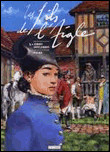

Daniel Vaxelaire écrit pour les enfants
Je vous ai déjà parlé de la littérature réunionnaise cet été mais les fêtes de noël approchant, je me sens inspiré pour reparler littérature. J'aimerais vous suggérer un cadeau pour les enfants qui ait une couleur réunionnaise. Il s'agit de livres pour enfants, les livres de Daniel Vaxelaire.
Du mémorial de la Réunion
Daniel Vaxelaire est réunionnais d'adoption, Il est né en Lorraine mais il découvre l'île à l'occasion de son service militaire dans les années 70. Il tombe très vite sous le charme et y exerce ses talents de journaliste. Son premier livre est un travail de commande des éditions Australes qui veut réaliser une somme historique de la Réunion. Il assurera pendant trois ans la direction rédactionnelle de cette encyclopédie historique en 7 volumes : Le Mémorial de La Réunion. Grâce à tous ces travaux de recherche, il va se mettre à écrire de nombreux romans historiques en commençant par Chasseurs de Noirs, un roman sur le marronage.
…aux livres pour enfants
Toutes ces références me direz-vous ne sont que des livres pour les grands enfants mais très vite Daniel Vaxelaire a élargi son répertoire et fait suer sa plume pour sortir des guides de tourisme des livrets encyclopédiques ou des romans jeunesse dont les actions se passent à la Réunion lontan. Il est question de pirates, d'esclaves et de forbans et biensur, d'enfants courrageux.
 Il est aussi le scénariste de la série de bande dessinée Les fils de l'aigle dont le Tome 7 est en préparation. Il a même travaillé pour RFO où il écrivait des chroniques matinales (radio Réunion) et des scénarios de séries télévisées (Bâtisseurs d'île sur RFO).
J'aurais pu parler de lui à l'occasion de ma présentation des guides de tourisme, de la littérature réunionnaise, du marronage, de bande dessinée péi, mais l'auteur est tellement prolixe qu'il vaut bien un article complet en ce mois de Noël.
Et puisque pour cette fête mercantile, je vous ai promis de vous conseiller des livres pour enfants, voici la liste de ses romans jeunesse avec illustrations, synopsis et lien pour les acheter.